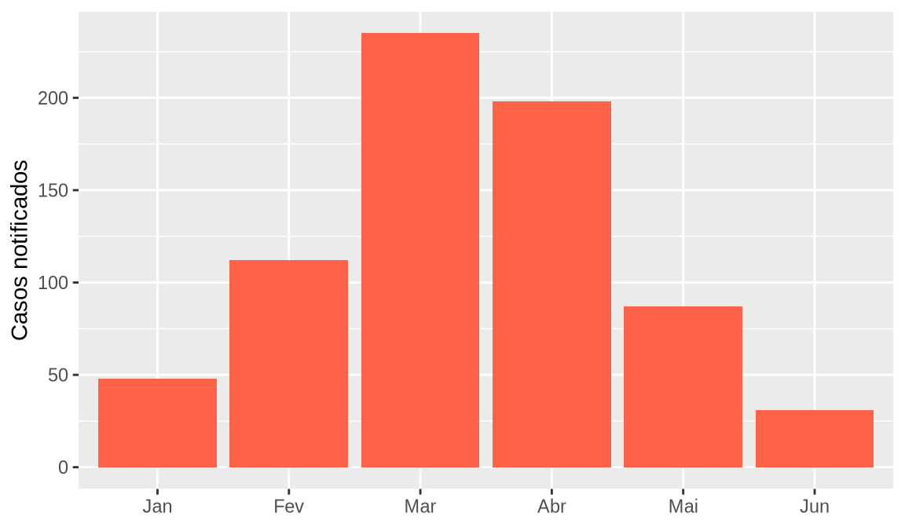

populacao <- 1815278
taxa <- 12.3456
format(populacao, big.mark = ".")
#> [1] "1.815.278"
format(round(taxa, 1), decimal.mark = ",")
#> [1] "12,3"4 Documentos reprodutíveis com Quarto
Pré-requisitos: Capítulo 3 · Pacotes: knitr, tibble e ggplot2 (apenas para ilustrar um gráfico)
Objetivos de aprendizagem
Ao final deste capítulo, espera-se que o estudante seja capaz de explicar o que é uma análise reprodutível e por que ela importa na pesquisa e nos serviços de saúde; reconhecer as partes de um documento Quarto (cabeçalho YAML, texto em Markdown e blocos de código); formatar texto com Markdown; controlar o comportamento dos blocos de código por meio de opções; gerar documentos em HTML e em Word; inserir resultados de cálculos no meio do texto; e perceber a continuidade entre o Quarto e o R Markdown.
Até aqui, escrevemos código em scripts e vimos os resultados no console. Mas o produto final de uma análise quase nunca é um script. É um relatório, um boletim, um artigo ou uma apresentação, com texto explicando o que foi feito, tabelas, gráficos e conclusões. Este capítulo mostra como produzir esses documentos de modo que o texto e os resultados nasçam juntos, a partir do mesmo arquivo. A ferramenta usada é o Quarto, o mesmo sistema com que este livro foi escrito.
4.1 Por que relatórios reprodutíveis?
Pense no fluxo de trabalho mais comum. A análise é feita em um programa, os resultados são copiados para uma planilha, os gráficos são exportados como imagem e tudo é colado em um editor de texto. Funciona, mas tem três problemas. O primeiro é o erro de transcrição: em algum momento, um número é copiado errado. O segundo é a atualização: se os dados mudarem, todo o processo precisa ser refeito à mão. O terceiro é a rastreabilidade: meses depois, ninguém sabe ao certo de onde saiu cada número do relatório.
Um documento reprodutível resolve os três problemas de uma vez. Nele, o texto e o código convivem no mesmo arquivo. Quando o documento é gerado, o código é executado e os resultados (números, tabelas e gráficos) são inseridos automaticamente nos lugares certos. Se os dados mudarem, basta gerar o documento de novo. E qualquer pessoa pode ver exatamente como cada resultado foi obtido.
O exemplo clássico em saúde pública é o boletim epidemiológico. Uma equipe que publica toda semana a situação da dengue no município pode escrever o boletim uma única vez, como documento Quarto, e a cada semana apenas trocar o arquivo de dados e gerar a nova edição. Os números do texto, as tabelas e a curva epidêmica se atualizam sozinhos.
4.2 Do R Markdown ao Quarto
Quem já teve contato com o R talvez conheça o R Markdown, arquivos com extensão .Rmd que fazem exatamente o que descrevemos acima. O Quarto é o sucessor do R Markdown, desenvolvido pela mesma equipe da Posit. Ele usa o mesmo mecanismo para executar o código em R (o pacote knitr) e quase toda a mesma sintaxe, mas funciona também com outras linguagens, como Python e Julia, e reúne em um só sistema a produção de relatórios, apresentações, sites e livros.
Na prática, quem aprende Quarto aprende também R Markdown, e vice-versa. Arquivos .Rmd continuam funcionando normalmente no RStudio, e a conversão de um formato para o outro exige poucas mudanças. Neste livro usamos o Quarto, e os arquivos têm a extensão .qmd. O Quarto já vem instalado nas versões recentes do RStudio.
4.3 Anatomia de um documento Quarto
Para criar um documento, use o menu File > New File > Quarto Document. O RStudio abre uma janela em que se pode informar o título e o autor e escolher o formato de saída. Ao confirmar, aparece um arquivo de exemplo com três tipos de conteúdo, que estão em todo documento Quarto.
O primeiro é o cabeçalho YAML, delimitado por duas linhas com três hífens. Ele contém as informações gerais do documento, como título, autor, data e formato de saída.
---
title: "Boletim de nascidos vivos"
author: "Equipe de Vigilância"
date: today
format: html
---O segundo é o texto, escrito em Markdown, uma linguagem de formatação muito simples, que será vista na próxima seção.
O terceiro são os blocos de código (code chunks), delimitados por três crases. A primeira linha do bloco indica, entre chaves, a linguagem do código.
```{r}
pesos <- c(3200, 2850, 3540, 2410)
mean(pesos)
```Quando o documento é gerado, o R executa o código do bloco e o resultado aparece logo abaixo dele.
O RStudio oferece duas formas de editar um documento Quarto. O editor visual mostra o texto já formatado, de forma parecida com um editor de texto comum, e tem botões para inserir títulos, listas, tabelas e imagens. O editor de código-fonte (Source) mostra o texto puro, com os símbolos de formatação. A troca entre os dois é feita pelos botões Source e Visual, no canto superior esquerdo do editor. Para quem está começando, o editor visual é mais confortável; com o tempo, muita gente passa a preferir o de código-fonte.
4.4 Markdown essencial
O Markdown usa símbolos simples para indicar a formatação. Os mais usados estão na Tabela 4.1.
| Você escreve | Resultado |
|---|---|
# Título |
Título de primeiro nível |
## Subtítulo |
Título de segundo nível |
*itálico* |
itálico |
**negrito** |
negrito |
`codigo` |
codigo |
- item |
Item de lista com marcador |
1. item |
Item de lista numerada |
[texto](https://www.saude.gov.br) |
Link |
 |
Imagem |
Parágrafos são separados por uma linha em branco. Tabelas simples podem ser escritas com barras verticais e hífens, como a tabela acima, mas o mais comum é gerá-las a partir dos dados, como veremos adiante.
O Markdown também aceita equações escritas na notação do LaTeX, entre cifrões. Uma equação em destaque fica entre dois cifrões duplos. Veja como a fórmula da taxa de mortalidade infantil é escrita e como ela aparece no documento.
$$
\text{TMI} = \frac{\text{óbitos de menores de 1 ano}}{\text{nascidos vivos}} \times 1000
$$\[ \text{TMI} = \frac{\text{óbitos de menores de 1 ano}}{\text{nascidos vivos}} \times 1000 \]
4.5 Blocos de código e suas opções
Cada bloco de código pode receber opções que controlam o que é executado e o que aparece no documento final. As opções são escritas no início do bloco, em linhas que começam com #|.
```{r}
#| label: media-pesos
#| echo: false
mean(pesos)
```Nesse exemplo, o bloco recebeu um nome (label) e a opção echo: false, que esconde o código e mostra apenas o resultado. Isso é útil em relatórios para gestores, que se interessam pelos números e não pelo código. As opções mais usadas estão na Tabela 4.2.
| Opção | O que faz |
|---|---|
label |
Dá um nome ao bloco, útil para encontrar erros e referenciar figuras |
echo |
Mostra (true) ou esconde (false) o código |
eval |
Executa (true) ou não (false) o código |
include |
Se false, executa o código mas não mostra nem o código nem o resultado |
warning, message |
Mostram ou escondem avisos e mensagens |
fig-cap |
Define a legenda de uma figura |
fig-width, fig-height |
Definem as dimensões de uma figura, em polegadas |
Um uso comum de include: false é o primeiro bloco do documento, em que carregamos os pacotes e importamos os dados. Esse código precisa ser executado, mas não interessa a quem lê o relatório.
Opções que valem para o documento inteiro podem ser colocadas no cabeçalho YAML, dentro de execute. O cabeçalho abaixo, por exemplo, esconde o código e os avisos em todos os blocos.
---
title: "Boletim de nascidos vivos"
format: html
execute:
echo: false
warning: false
---
O documento é gerado em uma sessão nova
Este é o erro mais comum de quem começa a usar o Quarto. Quando o documento é renderizado, o R abre uma sessão nova e vazia e executa os blocos de cima para baixo. Objetos que você criou no console, mas que não foram criados em nenhum bloco do documento, simplesmente não existem para ele. Se a renderização falhar com a mensagem “objeto não encontrado”, verifique se o objeto foi criado em algum bloco anterior. Tudo o que o documento usa precisa estar dentro dele, inclusive o library() dos pacotes.
4.6 Renderização e formatos de saída
Gerar o documento final a partir do arquivo .qmd se chama renderizar. No RStudio, basta clicar no botão Render (ou usar o atalho Ctrl + Shift + K, Cmd + Shift + K no macOS). O Quarto executa os blocos de código, junta os resultados ao texto e cria o arquivo de saída na mesma pasta do documento.
O formato de saída é definido no cabeçalho, pelo campo format. Os mais usados são html, que gera uma página para leitura no navegador, e docx, que gera um arquivo do Word. É possível pedir os dois ao mesmo tempo.
---
title: "Boletim de nascidos vivos"
format:
html: default
docx: default
---O formato HTML é o mais flexível, permite gráficos interativos e é ótimo para leitura na tela. O formato Word é útil quando o documento será revisado por pessoas que preferem fazer comentários e correções nesse programa. Também é possível gerar PDF (format: pdf), mas isso exige uma instalação do LaTeX. A forma mais simples de obtê-la é executar quarto install tinytex no terminal do RStudio.
4.7 Código inline e apresentação de números
Além dos blocos, o Quarto permite colocar pequenos trechos de código no meio de uma frase. Esse recurso, chamado de código inline, é escrito entre crases, começando pela letra r seguida de um espaço. Quando o documento é renderizado, o código é substituído pelo seu resultado. Suponha que, em um bloco anterior, tenhamos criado o objeto taxa. No texto do documento, escrevemos assim.
A taxa de mortalidade infantil foi de `r round(taxa, 1)` óbitos por mil nascidos vivos.E, no documento renderizado, a frase aparece com o número no lugar do código. Se os dados mudarem, o número muda junto, sem risco de esquecer de atualizar o texto.
Ao apresentar números em português, convém usar vírgula como separador decimal e ponto como separador de milhar. A função format() faz essa conversão com os argumentos decimal.mark e big.mark.
O resultado de format() é um texto, adequado para ser colocado em frases e tabelas, mas não para novos cálculos. Por isso, o formato deve ser aplicado apenas no momento de apresentar o número.
4.8 Estudo de caso: um primeiro boletim de indicadores
Vamos montar, do começo ao fim, um pequeno boletim mensal de notificações de dengue de um município hipotético. Os números são fictícios. O objetivo é ver todas as peças do Quarto funcionando juntas.
Crie um novo documento Quarto na pasta relatorios/ do seu projeto, com o nome boletim-dengue.qmd, e substitua o conteúdo de exemplo pelo texto abaixo.
---
title: "Boletim de dengue"
subtitle: "Município hipotético, janeiro a junho"
author: "Vigilância Epidemiológica"
date: today
format: html
execute:
echo: false
warning: false
---
```{r}
#| include: false
library(tibble)
library(ggplot2)
notificacoes <- tibble(
mes = factor(c("Jan", "Fev", "Mar", "Abr", "Mai", "Jun"),
levels = c("Jan", "Fev", "Mar", "Abr", "Mai", "Jun")),
casos = c(48, 112, 235, 198, 87, 31)
)
total <- sum(notificacoes$casos)
mes_pico <- notificacoes$mes[which.max(notificacoes$casos)]
```
## Situação no período
Entre janeiro e junho foram notificados `r total` casos de dengue.
O maior número de notificações ocorreu em `r mes_pico`.
```{r}
#| fig-cap: "Casos notificados de dengue por mês."
ggplot(notificacoes, aes(x = mes, y = casos)) +
geom_col(fill = "#ff6347") +
labs(x = NULL, y = "Casos notificados")
```
```{r}
knitr::kable(notificacoes, col.names = c("Mês", "Casos"))
```Vamos executar aqui o mesmo código para ver o resultado. Primeiro, o bloco que cria os dados e calcula os valores usados no texto.
library(tibble)
library(ggplot2)
notificacoes <- tibble(
mes = factor(c("Jan", "Fev", "Mar", "Abr", "Mai", "Jun"),
levels = c("Jan", "Fev", "Mar", "Abr", "Mai", "Jun")),
casos = c(48, 112, 235, 198, 87, 31)
)
total <- sum(notificacoes$casos)
mes_pico <- notificacoes$mes[which.max(notificacoes$casos)]No boletim, a frase “Entre janeiro e junho foram notificados 711 casos de dengue. O maior número de notificações ocorreu em Mar.” é montada automaticamente a partir desses objetos. A função which.max() devolve a posição do maior valor, e com ela encontramos o mês do pico.
Em seguida, o gráfico de colunas e a tabela.
ggplot(notificacoes, aes(x = mes, y = casos)) +
geom_col(fill = "#ff6347") +
labs(x = NULL, y = "Casos notificados")
knitr::kable(notificacoes, col.names = c("Mês", "Casos"))| Mês | Casos |
|---|---|
| Jan | 48 |
| Fev | 112 |
| Mar | 235 |
| Abr | 198 |
| Mai | 87 |
| Jun | 31 |
Não se preocupe, por enquanto, com os detalhes do código do gráfico. A lógica do ggplot2 será explicada com calma no Capítulo 10. O importante aqui é perceber o fluxo. Os dados são criados uma única vez, e o texto, o gráfico e a tabela são todos gerados a partir deles. Experimente trocar o número de casos de março por 300 e renderizar de novo. O total, o mês de pico, a figura e a tabela vão se atualizar sozinhos.
Use o Quarto para os exercícios
A partir deste capítulo, a recomendação é resolver os exercícios do livro em documentos Quarto, um por capítulo, guardados na pasta relatorios/ do projeto. Assim, o enunciado, o código e as respostas ficam juntos, e o documento renderizado pode ser entregue diretamente.
4.9 Exercícios
Fixação
Crie um documento Quarto com o título “Meu primeiro documento”, um título de seção, um parágrafo com uma palavra em negrito e outra em itálico, uma lista numerada com três itens e um bloco de código que calcule a média de cinco números. Renderize em HTML.
No documento do exercício anterior, acrescente a opção
echo: falseao bloco de código e renderize de novo. O que mudou? Depois, troque poreval: falsee compare.Escreva, em Markdown, a fórmula do coeficiente de incidência (casos novos divididos pela população, multiplicados por cem mil) como equação em destaque.
Aplicação
Transforme o estudo de caso do Capítulo 2 em um documento Quarto. Os indicadores (taxa de mortalidade infantil, proporção de baixo peso e incidência de dengue) devem ser calculados em um bloco com
include: falsee apresentados no texto por meio de código inline, com uma casa decimal e vírgula como separador decimal.Altere o cabeçalho do boletim do estudo de caso para gerar, ao mesmo tempo, um arquivo HTML e um arquivo Word. Abra o arquivo Word e verifique como a tabela e o gráfico foram inseridos.
Desafio
Renderize o boletim do estudo de caso, apague do bloco inicial a linha que cria o objeto
totale tente renderizar de novo. Leia a mensagem de erro e explique, com suas palavras, por que o documento não é gerado mesmo que o objeto ainda exista no painel Environment do RStudio.Pesquise na documentação do Quarto (https://quarto.org/docs/guide/) como incluir referências cruzadas a figuras, de modo que o texto diga “como mostra a Figura 1” e o número seja atualizado automaticamente. Aplique o recurso ao boletim.
4.10 Síntese
Um documento Quarto reúne, em um único arquivo, o texto, o código e os resultados de uma análise. Ele tem três partes: o cabeçalho YAML, com as informações gerais e o formato de saída; o texto, formatado em Markdown; e os blocos de código, cujas opções controlam o que é executado e mostrado. Ao renderizar, o código é executado em uma sessão nova do R, e os resultados são inseridos no documento final, que pode ser HTML, Word ou PDF. O código inline coloca resultados no meio das frases, e a função format() ajusta a apresentação dos números ao padrão brasileiro. O Quarto é o sucessor do R Markdown, e o que se aprende em um vale para o outro.
| Elemento | Onde se usa | Finalidade |
|---|---|---|
title, author, date, format |
Cabeçalho YAML | Informações gerais e formato de saída |
execute |
Cabeçalho YAML | Opções de execução válidas para todo o documento |
#| label, #| echo, #| eval, #| include |
Blocos de código | Nome do bloco e controle de exibição e execução |
#| warning, #| message |
Blocos de código | Mostrar ou esconder avisos e mensagens |
#| fig-cap, #| fig-width, #| fig-height |
Blocos de código | Legenda e dimensões de figuras |
| Código inline | Texto | Inserir resultados no meio das frases |
knitr::kable() |
Blocos de código | Gerar tabelas simples |
format(), round() |
Blocos de código e inline | Formatar números |
which.max() |
Blocos de código | Encontrar a posição do maior valor |
4.11 Para saber mais
O capítulo 28 do R para Ciência de Dados (WICKHAM; ÇETINKAYA-RUNDEL; GROLEMUND, 2023) é uma excelente introdução ao Quarto, com seções sobre o editor visual, os blocos de código, figuras, tabelas e o cabeçalho YAML; o capítulo 29 apresenta os demais formatos de saída, como apresentações e sites. O capítulo 40 do Manual de R para Epidemiologistas (BATRA et al., 2021) trata do R Markdown com exemplos voltados à vigilância, incluindo relatórios parametrizados, que geram uma versão do mesmo relatório para cada município ou região. A documentação oficial do Quarto, em https://quarto.org/docs/guide/, é a referência mais completa e atualizada.
| Obra | Capítulo | Seções de interesse |
|---|---|---|
| R para Ciência de Dados (WICKHAM; ÇETINKAYA-RUNDEL; GROLEMUND, 2023) | 28. Quarto; 29. Formatos para Quarto | Básico de Quarto; Editor visual; Blocos de código; Figuras; Tabelas; Cabeçalho YAML |
| Manual de R para Epidemiologistas (BATRA et al., 2021) | 40. Relatórios com R Markdown | Componentes do R Markdown; Produzindo o documento; Relatórios parametrizados |